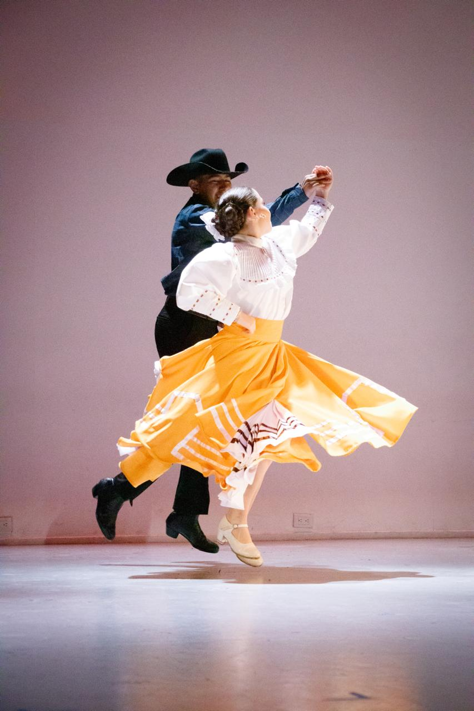
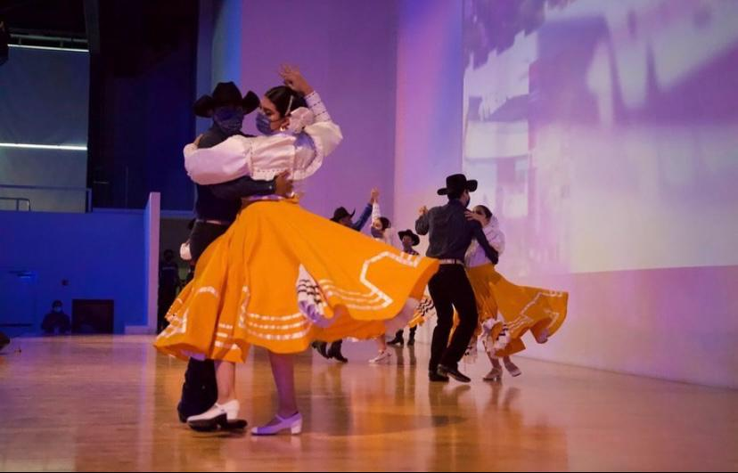
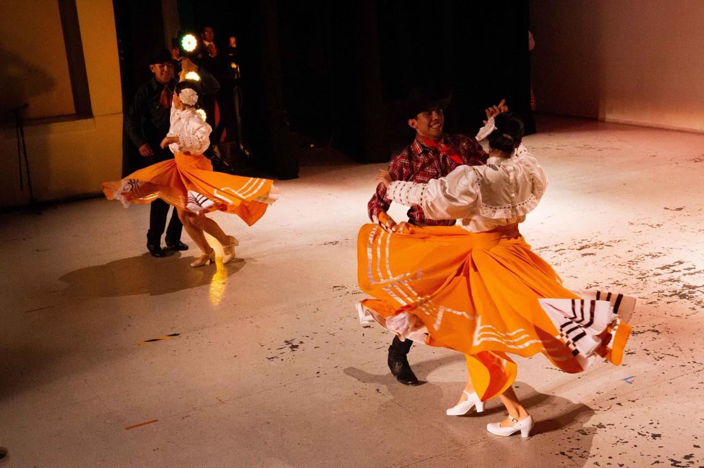

Nuevo León is a really popular state across Mexico and outside.
Some of its caracteristics are:
- 'Banda' music
- Polkas
- Elegant costumes with lots of Spanish influence
Here are some photos of Nuevo León dances:


